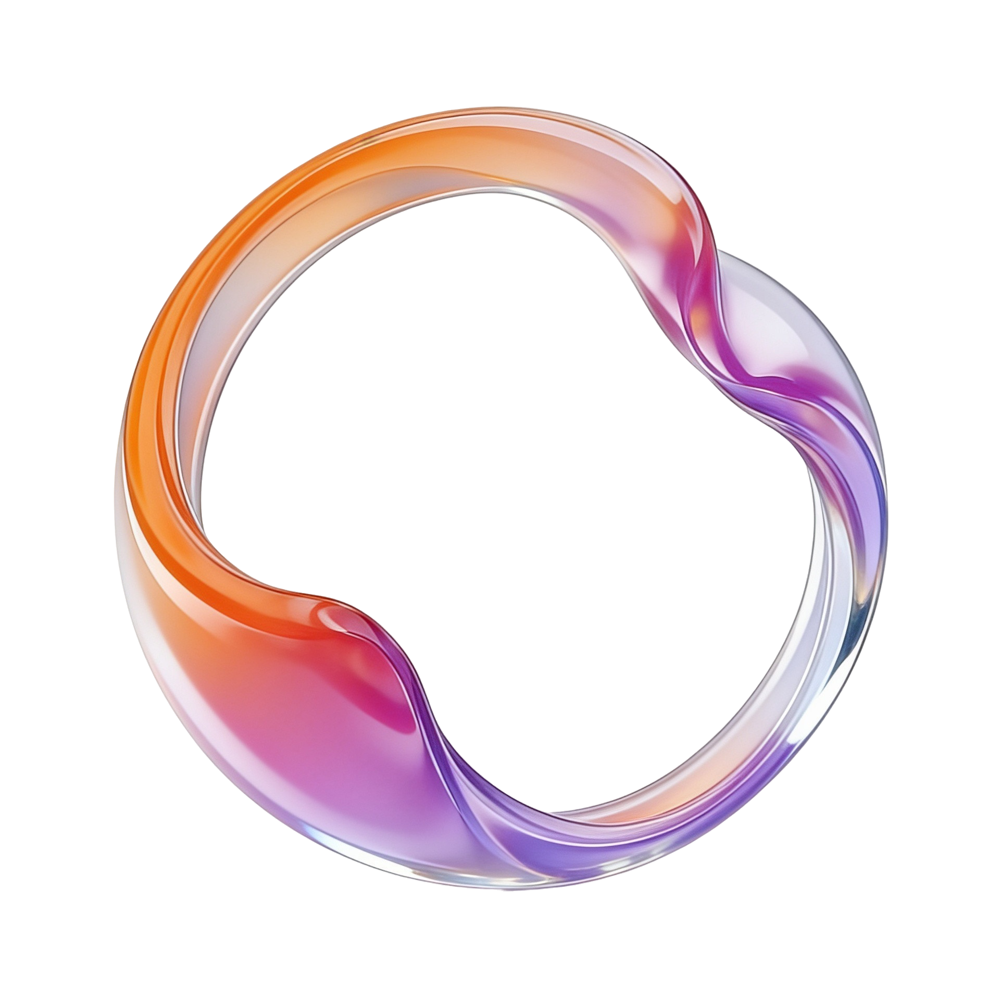
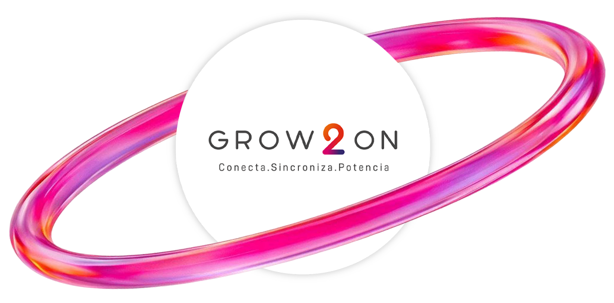
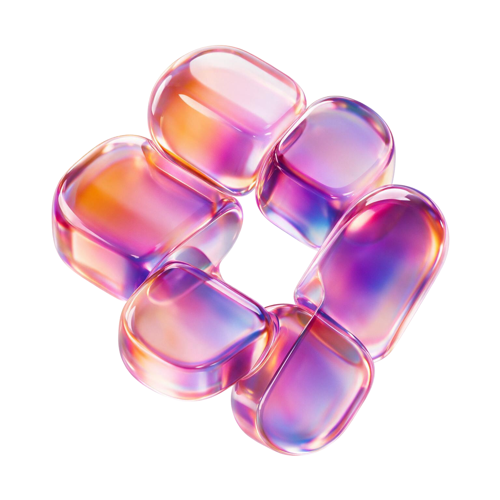
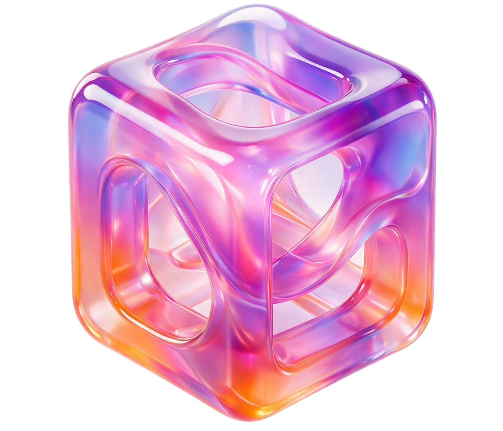

toroide + burbujas (spin + float)

anillo hero (spin 46s)

anillo del hub (brillo giratorio 46s, logo fijo)

hero integraciones (float)

hero ERP (float)
Objetos 3D renderizados, translúcidos, con degradado naranja→rosa→violeta y reflejos especulares. Siempre sobre blanco, sin sombra proyectada. Nunca se recolorean ni se redibujan como SVG.